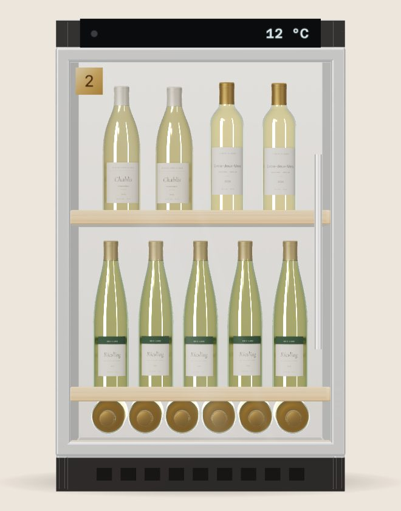

Un distributeur d'alcool
« La délivrance de boissons alcooliques au moyen de distributeurs automatiques est interdite. »
Le texte de base : pas de distributeur d'alcool en France.S07
La vente d'alcool est interdite aux mineurs de moins de 18 ans · Projet d'étude, sans vente réelle
Deux côtés de la loi. Choisissez un côté pour lire les textes qui s'y rattachent.
« La délivrance de boissons alcooliques au moyen de distributeurs automatiques est interdite. »
Le texte de base : pas de distributeur d'alcool en France.S07
« La mise à disposition du public d'un appareil automatique distribuant des boissons alcooliques est punie de 3 750 euros d'amende. »
L'appareil est saisi et confisqué ; six mois de prison en cas de récidive.S08
La vente d'alcool aux mineurs est interdite.
La personne qui délivre la boisson doit exiger la preuve de la majorité.S17
« La vente à distance est considérée comme une vente à emporter. »
Commander en ligne puis retirer sa commande, c'est une vente à emporter.S15
Une licence à emporter suffit.
Petite licence à emporter ou licence à emporter, selon les boissons vendues.S16
La vente de nuit reste possible, sous condition.
Entre 22 h et 8 h, il faut avoir suivi une formation spécifique ; sinon, 3 750 € d'amende.S08
Notre casier Retirer une commande déjà payée en ligne relève du côté autorisé, la vente à distance. Il n'est pas expressément visé par l'interdiction des distributeurs, mais aucun juge français ne l'a encore confirmé : le seul précédent, en Polynésie française, est présenté plus bas.S14
Faites tourner l'aiguille des heures : au deuxième tour, on passe de midi à minuit.
En Gironde, un arrêté du préfet de 2023 n'autorise entre 22 h et 8 h que la vente à emporter de boissons sans alcool, et précise que la vente à distance compte comme une vente à emporter.S119 À Bordeaux, le vin se retire donc de 8 h à 22 h : ni la licence ni la formation de vente de nuit n'y changent rien. Le maire peut encore avancer l'interdiction, mais jamais avant 20 h.S119
Ailleurs en France, vendre de l'alcool à emporter entre 22 h et 8 h reste possible avec cette formationS15, sauf arrêté local plus strict, comme à Aix-en-Provence dès 21 h.S78
En Polynésie française, la cour administrative d'appel de Paris a jugé en 2024 qu'un conteneur où l'on retire des boissons déjà payées en ligne n'est pas un distributeur automatique, faute de paiement intégré.S14
C'est une analogie, pas une règle applicable en France métropolitaine.
Casier de retrait de vin exploité à Aix-en-Provence par la société Espace Drive, qui louait ses machines aux producteurs environ 1 230 à 1 300 € par mois.S10
Espace Drive en cessation des paiements.S79
Le tribunal de commerce d'Aix-en-Provence ouvre un redressement judiciaire.S79
Annonce au BODACCLiquidation judiciaire. La cause de la défaillance n'est pas publique.S80
Annonce au BODACCLe casier de retrait est le seul format défendable en France aujourd'hui. Il n'est pas sans risque juridique, et le seul exemple français n'a pas survécu. Notre concept doit répondre à ces deux faiblesses.
Cliquez ou touchez la cave pour ouvrir sa porte.

L'abus d'alcool est dangereux pour la santé. À consommer avec modération.